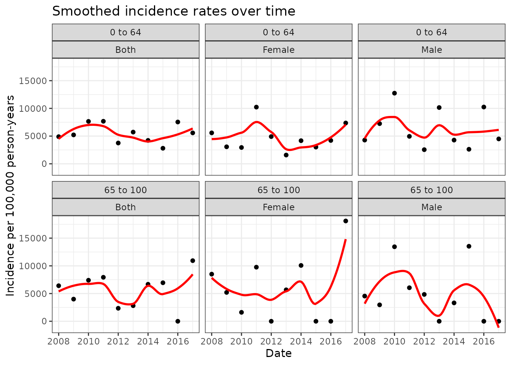

Working with IncidencePrevalence results
a06_Working_with_IncidencePrevalence_Results.RmdStandardardised results format
The IncidencePrevalence returns results from analyses in a
standardised results format, as defined in the omopgenerics package.
This format, a summarised_result, is explained in general
in the omopgenerics documenatation https://darwin-eu.github.io/omopgenerics/articles/summarised_result.html.
Let’s see how this result format is used by IncidencePrevalence.
We’ll first create some example incidence and prevalence results with a mock dataset.
library(dplyr)
library(IncidencePrevalence)
cdm <- mockIncidencePrevalence(
sampleSize = 10000,
outPre = 0.3,
minOutcomeDays = 365,
maxOutcomeDays = 3650
)
cdm <- generateDenominatorCohortSet(
cdm = cdm,
name = "denominator",
cohortDateRange = as.Date(c("2008-01-01", "2018-01-01")),
ageGroup = list(
c(0, 64),
c(65, 100)
),
sex = c("Male", "Female", "Both"),
daysPriorObservation = 180
)
inc <- estimateIncidence(
cdm = cdm,
denominatorTable = "denominator",
outcomeTable = "outcome",
interval = "years",
repeatedEvents = TRUE,
outcomeWashout = 180,
completeDatabaseIntervals = TRUE
)
prev_point <- estimatePointPrevalence(
cdm = cdm,
denominatorTable = "denominator",
outcomeTable = "outcome",
interval = "years",
timePoint = "start"
)We can see that both of our results object have a “summarised_result” class.
inherits(inc, "summarised_result")
#> [1] TRUE
inherits(prev_point, "summarised_result")
#> [1] TRUEIn practice, this means that our results have the following columns
omopgenerics::resultColumns("summarised_result")
#> [1] "result_id" "cdm_name" "group_name" "group_level"
#> [5] "strata_name" "strata_level" "variable_name" "variable_level"
#> [9] "estimate_name" "estimate_type" "estimate_value" "additional_name"
#> [13] "additional_level"And we can see that this is indeed the case for incidence and prevalence results
inc |>
glimpse()
#> Rows: 700
#> Columns: 13
#> $ result_id <int> 1, 1, 1, 1, 1, 1, 1, 1, 1, 1, 1, 1, 1, 1, 1, 1, 1, 1,…
#> $ cdm_name <chr> "mock", "mock", "mock", "mock", "mock", "mock", "mock…
#> $ group_name <chr> "denominator_cohort_name &&& outcome_cohort_name", "d…
#> $ group_level <chr> "denominator_cohort_3 &&& cohort_1", "denominator_coh…
#> $ strata_name <chr> "overall", "overall", "overall", "overall", "overall"…
#> $ strata_level <chr> "overall", "overall", "overall", "overall", "overall"…
#> $ variable_name <chr> "Denominator", "Outcome", "Denominator", "Denominator…
#> $ variable_level <chr> NA, NA, NA, NA, NA, NA, NA, NA, NA, NA, NA, NA, NA, N…
#> $ estimate_name <chr> "denominator_count", "outcome_count", "person_days", …
#> $ estimate_type <chr> "integer", "integer", "numeric", "numeric", "numeric"…
#> $ estimate_value <chr> "326", "13", "96994", "265.555", "4895.408", "2606.59…
#> $ additional_name <chr> "incidence_start_date &&& incidence_end_date &&& anal…
#> $ additional_level <chr> "2008-01-01 &&& 2008-12-31 &&& years", "2008-01-01 &&…
prev_point |>
glimpse()
#> Rows: 610
#> Columns: 13
#> $ result_id <int> 1, 1, 1, 1, 1, 1, 1, 1, 1, 1, 1, 1, 1, 1, 1, 1, 1, 1,…
#> $ cdm_name <chr> "mock", "mock", "mock", "mock", "mock", "mock", "mock…
#> $ group_name <chr> "denominator_cohort_name &&& outcome_cohort_name", "d…
#> $ group_level <chr> "denominator_cohort_3 &&& cohort_1", "denominator_coh…
#> $ strata_name <chr> "overall", "overall", "overall", "overall", "overall"…
#> $ strata_level <chr> "overall", "overall", "overall", "overall", "overall"…
#> $ variable_name <chr> "Denominator", "Outcome", "Outcome", "Outcome", "Outc…
#> $ variable_level <chr> NA, NA, NA, NA, NA, NA, NA, NA, NA, NA, NA, NA, NA, N…
#> $ estimate_name <chr> "denominator_count", "outcome_count", "prevalence", "…
#> $ estimate_type <chr> "integer", "integer", "numeric", "numeric", "numeric"…
#> $ estimate_value <chr> "330", "57", "0.17273", "0.13577", "0.21722", "322", …
#> $ additional_name <chr> "prevalence_start_date &&& prevalence_end_date &&& an…
#> $ additional_level <chr> "2008-01-01 &&& 2008-01-01 &&& years", "2008-01-01 &&…In addition to these main results, we can see that our results are
also associated with settings. These settings contain information on how
the results were created. Although we can see that some settings are
present for both incidence and prevalence, such as
denominator_days_prior_observation which relates to the
input to daysPriorObservation we specified above, others
are only present for the relevant result, such analysis_outcome_washout
which relates to the outcomeWashout argument used for the
estimateIncidence() function.
settings(inc) |>
glimpse()
#> Rows: 12
#> Columns: 20
#> $ result_id <int> 1, 2, 3, 4, 5, 6, 7, 8, 9, 10, 11…
#> $ result_type <chr> "incidence", "incidence", "incide…
#> $ package_name <chr> "IncidencePrevalence", "Incidence…
#> $ package_version <chr> "1.2.0", "1.2.0", "1.2.0", "1.2.0…
#> $ group <chr> "denominator_cohort_name &&& outc…
#> $ strata <chr> "", "", "", "", "", "", "reason",…
#> $ additional <chr> "incidence_start_date &&& inciden…
#> $ min_cell_count <chr> "0", "0", "0", "0", "0", "0", "0"…
#> $ analysis_censor_cohort_name <chr> "None", "None", "None", "None", "…
#> $ analysis_complete_database_intervals <chr> "TRUE", "TRUE", "TRUE", "TRUE", "…
#> $ analysis_outcome_washout <chr> "180", "180", "180", "180", "180"…
#> $ analysis_repeated_events <chr> "TRUE", "TRUE", "TRUE", "TRUE", "…
#> $ denominator_age_group <chr> "0 to 64", "0 to 64", "0 to 64", …
#> $ denominator_days_prior_observation <chr> "180", "180", "180", "180", "180"…
#> $ denominator_end_date <chr> "2018-01-01", "2018-01-01", "2018…
#> $ denominator_requirements_at_entry <chr> "FALSE", "FALSE", "FALSE", "FALSE…
#> $ denominator_sex <chr> "Both", "Female", "Male", "Both",…
#> $ denominator_start_date <chr> "2008-01-01", "2008-01-01", "2008…
#> $ denominator_target_cohort_name <chr> "None", "None", "None", "None", "…
#> $ denominator_time_at_risk <chr> "0 to Inf", "0 to Inf", "0 to Inf…
settings(prev_point) |>
glimpse()
#> Rows: 12
#> Columns: 19
#> $ result_id <int> 1, 2, 3, 4, 5, 6, 7, 8, 9, 10, 11…
#> $ result_type <chr> "prevalence", "prevalence", "prev…
#> $ package_name <chr> "IncidencePrevalence", "Incidence…
#> $ package_version <chr> "1.2.0", "1.2.0", "1.2.0", "1.2.0…
#> $ group <chr> "denominator_cohort_name &&& outc…
#> $ strata <chr> "", "", "", "", "", "", "reason",…
#> $ additional <chr> "prevalence_start_date &&& preval…
#> $ min_cell_count <chr> "0", "0", "0", "0", "0", "0", "0"…
#> $ analysis_complete_database_intervals <chr> "FALSE", "FALSE", "FALSE", "FALSE…
#> $ analysis_full_contribution <chr> "FALSE", "FALSE", "FALSE", "FALSE…
#> $ analysis_type <chr> "point prevalence", "point preval…
#> $ denominator_age_group <chr> "0 to 64", "0 to 64", "0 to 64", …
#> $ denominator_days_prior_observation <chr> "180", "180", "180", "180", "180"…
#> $ denominator_end_date <chr> "2018-01-01", "2018-01-01", "2018…
#> $ denominator_requirements_at_entry <chr> "FALSE", "FALSE", "FALSE", "FALSE…
#> $ denominator_sex <chr> "Both", "Female", "Male", "Both",…
#> $ denominator_start_date <chr> "2008-01-01", "2008-01-01", "2008…
#> $ denominator_target_cohort_name <chr> "None", "None", "None", "None", "…
#> $ denominator_time_at_risk <chr> "0 to Inf", "0 to Inf", "0 to Inf…Because our results are in the same format we can easily combine them
using the bind. We can see that after this we will have the
same results columns, while the settings are now combined with all
analytic choices used stored.
results <- bind(inc, prev_point) |>
glimpse()
#> Rows: 1,310
#> Columns: 13
#> $ result_id <int> 1, 1, 1, 1, 1, 1, 1, 1, 1, 1, 1, 1, 1, 1, 1, 1, 1, 1,…
#> $ cdm_name <chr> "mock", "mock", "mock", "mock", "mock", "mock", "mock…
#> $ group_name <chr> "denominator_cohort_name &&& outcome_cohort_name", "d…
#> $ group_level <chr> "denominator_cohort_3 &&& cohort_1", "denominator_coh…
#> $ strata_name <chr> "overall", "overall", "overall", "overall", "overall"…
#> $ strata_level <chr> "overall", "overall", "overall", "overall", "overall"…
#> $ variable_name <chr> "Denominator", "Outcome", "Denominator", "Denominator…
#> $ variable_level <chr> NA, NA, NA, NA, NA, NA, NA, NA, NA, NA, NA, NA, NA, N…
#> $ estimate_name <chr> "denominator_count", "outcome_count", "person_days", …
#> $ estimate_type <chr> "integer", "integer", "numeric", "numeric", "numeric"…
#> $ estimate_value <chr> "326", "13", "96994", "265.555", "4895.408", "2606.59…
#> $ additional_name <chr> "incidence_start_date &&& incidence_end_date &&& anal…
#> $ additional_level <chr> "2008-01-01 &&& 2008-12-31 &&& years", "2008-01-01 &&…
results |>
glimpse()
#> Rows: 1,310
#> Columns: 13
#> $ result_id <int> 1, 1, 1, 1, 1, 1, 1, 1, 1, 1, 1, 1, 1, 1, 1, 1, 1, 1,…
#> $ cdm_name <chr> "mock", "mock", "mock", "mock", "mock", "mock", "mock…
#> $ group_name <chr> "denominator_cohort_name &&& outcome_cohort_name", "d…
#> $ group_level <chr> "denominator_cohort_3 &&& cohort_1", "denominator_coh…
#> $ strata_name <chr> "overall", "overall", "overall", "overall", "overall"…
#> $ strata_level <chr> "overall", "overall", "overall", "overall", "overall"…
#> $ variable_name <chr> "Denominator", "Outcome", "Denominator", "Denominator…
#> $ variable_level <chr> NA, NA, NA, NA, NA, NA, NA, NA, NA, NA, NA, NA, NA, N…
#> $ estimate_name <chr> "denominator_count", "outcome_count", "person_days", …
#> $ estimate_type <chr> "integer", "integer", "numeric", "numeric", "numeric"…
#> $ estimate_value <chr> "326", "13", "96994", "265.555", "4895.408", "2606.59…
#> $ additional_name <chr> "incidence_start_date &&& incidence_end_date &&& anal…
#> $ additional_level <chr> "2008-01-01 &&& 2008-12-31 &&& years", "2008-01-01 &&…
settings(results) |>
glimpse()
#> Rows: 24
#> Columns: 22
#> $ result_id <int> 1, 2, 3, 4, 5, 6, 7, 8, 9, 10, 11…
#> $ result_type <chr> "incidence", "incidence", "incide…
#> $ package_name <chr> "IncidencePrevalence", "Incidence…
#> $ package_version <chr> "1.2.0", "1.2.0", "1.2.0", "1.2.0…
#> $ group <chr> "denominator_cohort_name &&& outc…
#> $ strata <chr> "", "", "", "", "", "", "reason",…
#> $ additional <chr> "incidence_start_date &&& inciden…
#> $ min_cell_count <chr> "0", "0", "0", "0", "0", "0", "0"…
#> $ analysis_censor_cohort_name <chr> "None", "None", "None", "None", "…
#> $ analysis_complete_database_intervals <chr> "TRUE", "TRUE", "TRUE", "TRUE", "…
#> $ analysis_full_contribution <chr> NA, NA, NA, NA, NA, NA, NA, NA, N…
#> $ analysis_outcome_washout <chr> "180", "180", "180", "180", "180"…
#> $ analysis_repeated_events <chr> "TRUE", "TRUE", "TRUE", "TRUE", "…
#> $ analysis_type <chr> NA, NA, NA, NA, NA, NA, NA, NA, N…
#> $ denominator_age_group <chr> "0 to 64", "0 to 64", "0 to 64", …
#> $ denominator_days_prior_observation <chr> "180", "180", "180", "180", "180"…
#> $ denominator_end_date <chr> "2018-01-01", "2018-01-01", "2018…
#> $ denominator_requirements_at_entry <chr> "FALSE", "FALSE", "FALSE", "FALSE…
#> $ denominator_sex <chr> "Both", "Female", "Male", "Both",…
#> $ denominator_start_date <chr> "2008-01-01", "2008-01-01", "2008…
#> $ denominator_target_cohort_name <chr> "None", "None", "None", "None", "…
#> $ denominator_time_at_risk <chr> "0 to Inf", "0 to Inf", "0 to Inf…Exporting and importing results
We can export our results in a single CSV. Note that when exporting we will apply minimum cell count of 5, suppressing any results below this.
dir <- file.path(tempdir(), "my_study_results")
dir.create(dir)
exportSummarisedResult(results,
minCellCount = 5,
fileName = "incidence_prevalence_results.csv",
path = dir)We can see we have created a single CSV file with our results which contains our suppressed aggregated results which our ready to share.
list.files(dir)
#> [1] "incidence_prevalence_results.csv"We can import our results back into R (or if we’re running a network study we could import our set of results from data partners).
res_imported <- importSummarisedResult(path = dir)Validate minimum cell count suppression
We can validate whether our results have been suppressed. We can see that our original results have not been suppressed but the ones we exported were.
omopgenerics::isResultSuppressed(results)
#> Warning: ✖ 24 (1310 rows) not suppressed.
#> [1] FALSE
omopgenerics::isResultSuppressed(res_imported)
#> ✔ The <summarised_result> is suppressed with
#> minCellCount = 5.
#> [1] TRUETidying results for further analysis
Although our standardised result format is a nice way to combine, store, and share results, in can be somewhat difficult to use if we want to perform further analyses. So to get to a tidy format more specific to their type of results we can use asIncidenceResult() and asPrevalenceResult(), respectively.
asIncidenceResult(inc) |> glimpse()
#> Rows: 60
#> Columns: 26
#> $ cdm_name <chr> "mock", "mock", "mock", "mock", "…
#> $ denominator_cohort_name <chr> "denominator_cohort_3", "denomina…
#> $ outcome_cohort_name <chr> "cohort_1", "cohort_1", "cohort_1…
#> $ incidence_start_date <date> 2008-01-01, 2009-01-01, 2010-01-…
#> $ incidence_end_date <date> 2008-12-31, 2009-12-31, 2010-12-…
#> $ analysis_interval <chr> "years", "years", "years", "years…
#> $ analysis_censor_cohort_name <chr> "None", "None", "None", "None", "…
#> $ analysis_complete_database_intervals <chr> "TRUE", "TRUE", "TRUE", "TRUE", "…
#> $ analysis_outcome_washout <chr> "180", "180", "180", "180", "180"…
#> $ analysis_repeated_events <chr> "TRUE", "TRUE", "TRUE", "TRUE", "…
#> $ denominator_age_group <chr> "0 to 64", "0 to 64", "0 to 64", …
#> $ denominator_days_prior_observation <chr> "180", "180", "180", "180", "180"…
#> $ denominator_end_date <date> 2018-01-01, 2018-01-01, 2018-01-…
#> $ denominator_requirements_at_entry <chr> "FALSE", "FALSE", "FALSE", "FALSE…
#> $ denominator_sex <chr> "Both", "Both", "Both", "Both", "…
#> $ denominator_start_date <date> 2008-01-01, 2008-01-01, 2008-01-…
#> $ denominator_target_cohort_name <chr> "None", "None", "None", "None", "…
#> $ denominator_time_at_risk <chr> "0 to Inf", "0 to Inf", "0 to Inf…
#> $ denominator_count <int> 326, 317, 312, 235, 179, 140, 106…
#> $ outcome_count <int> 13, 14, 20, 16, 6, 7, 4, 2, 4, 2,…
#> $ person_days <dbl> 96994, 98005, 95462, 76142, 58392…
#> $ person_years <dbl> 265.555, 268.323, 261.361, 208.46…
#> $ incidence_100000_pys <dbl> 4895.408, 5217.592, 7652.251, 767…
#> $ incidence_100000_pys_95CI_lower <dbl> 2606.598, 2852.506, 4674.194, 438…
#> $ incidence_100000_pys_95CI_upper <dbl> 8371.296, 8754.233, 11818.281, 12…
#> $ result_type <chr> "tidy_incidence", "tidy_incidence…
asPrevalenceResult(prev_point) |> glimpse()
#> Rows: 66
#> Columns: 23
#> $ cdm_name <chr> "mock", "mock", "mock", "mock", "…
#> $ denominator_cohort_name <chr> "denominator_cohort_3", "denomina…
#> $ outcome_cohort_name <chr> "cohort_1", "cohort_1", "cohort_1…
#> $ prevalence_start_date <date> 2008-01-01, 2009-01-01, 2010-01-…
#> $ prevalence_end_date <date> 2008-01-01, 2009-01-01, 2010-01-…
#> $ analysis_interval <chr> "years", "years", "years", "years…
#> $ analysis_complete_database_intervals <chr> "FALSE", "FALSE", "FALSE", "FALSE…
#> $ analysis_full_contribution <chr> "FALSE", "FALSE", "FALSE", "FALSE…
#> $ analysis_type <chr> "point prevalence", "point preval…
#> $ denominator_age_group <chr> "0 to 64", "0 to 64", "0 to 64", …
#> $ denominator_days_prior_observation <chr> "180", "180", "180", "180", "180"…
#> $ denominator_end_date <date> 2018-01-01, 2018-01-01, 2018-01-…
#> $ denominator_requirements_at_entry <chr> "FALSE", "FALSE", "FALSE", "FALSE…
#> $ denominator_sex <chr> "Both", "Both", "Both", "Both", "…
#> $ denominator_start_date <date> 2008-01-01, 2008-01-01, 2008-01-…
#> $ denominator_target_cohort_name <chr> "None", "None", "None", "None", "…
#> $ denominator_time_at_risk <chr> "0 to Inf", "0 to Inf", "0 to Inf…
#> $ denominator_count <int> 330, 322, 326, 291, 236, 184, 142…
#> $ outcome_count <int> 57, 55, 54, 56, 57, 44, 36, 27, 2…
#> $ prevalence <dbl> 0.17273, 0.17081, 0.16564, 0.1924…
#> $ prevalence_95CI_lower <dbl> 0.13577, 0.13364, 0.12923, 0.1512…
#> $ prevalence_95CI_upper <dbl> 0.21722, 0.21573, 0.20985, 0.2416…
#> $ result_type <chr> "tidy_prevalence", "tidy_prevalen…With these formats it is now much easier to create custom tables, plots, or post-process are results. For a somewhat trivial example, we can use this to help us quickly add a smoothed line to our incidence results in a custom plot.
library(ggplot2)
asIncidenceResult(inc) |>
ggplot(aes(x = incidence_start_date,
y = incidence_100000_pys)) +
geom_point() +
geom_smooth(method = "loess", se = FALSE, color = "red") +
theme_bw() +
facet_wrap(vars(denominator_age_group, denominator_sex)) +
ggtitle("Smoothed incidence rates over time") +
xlab("Date") +
ylab("Incidence per 100,000 person-years")